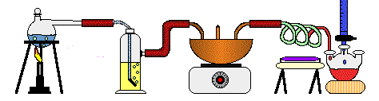

Helene, 38, Oslo
Tenk negativt, så blir du aldri skuffa!
Helenes tidligere studieretninger:
- Grafisk Design
- Biologi
- Ernæringsfysiologi

Et stolt øyeblikk: Da Helene satt opp en stand i forbindelse med et studieprosjekt, ble hun senere oppringt av Toyota Norge, som også gjerne ville ha en stand laget av Helene.
link to Toyota Norge
Helene ønker å utvikle seg selv innen fagfeltet Design og gleder seg spesielt til å lære seg programmering og brukergrensesnitt
To faktorer Helene legger til grunn for trivsel på skolen:
- Godt miljø
- Dyktige lærere